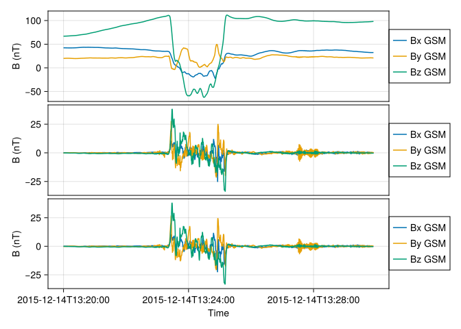
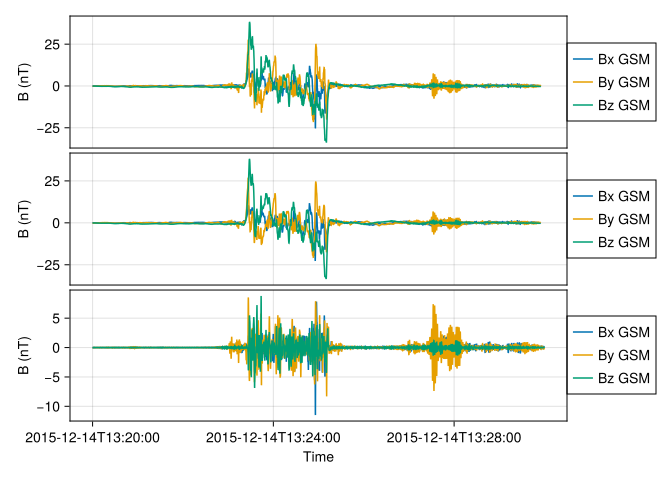
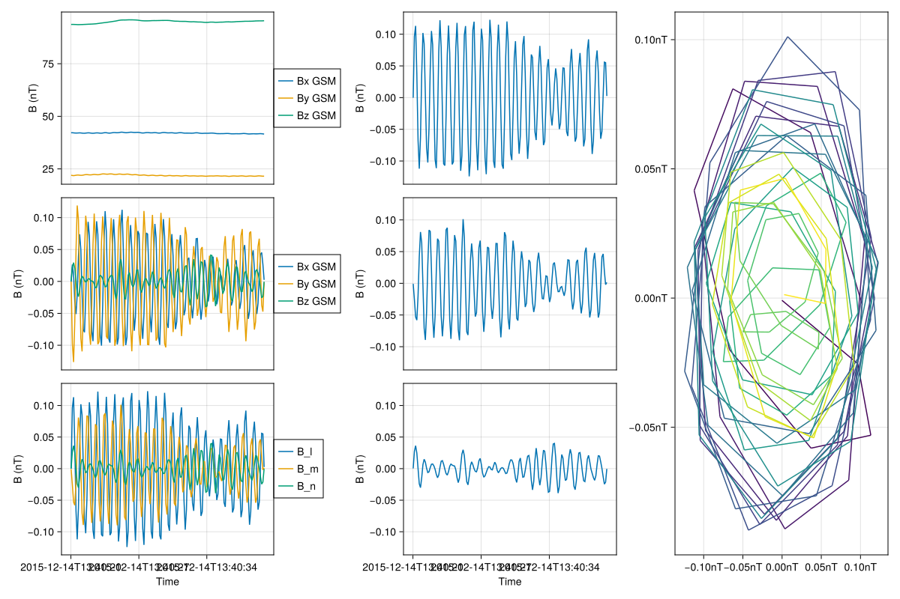
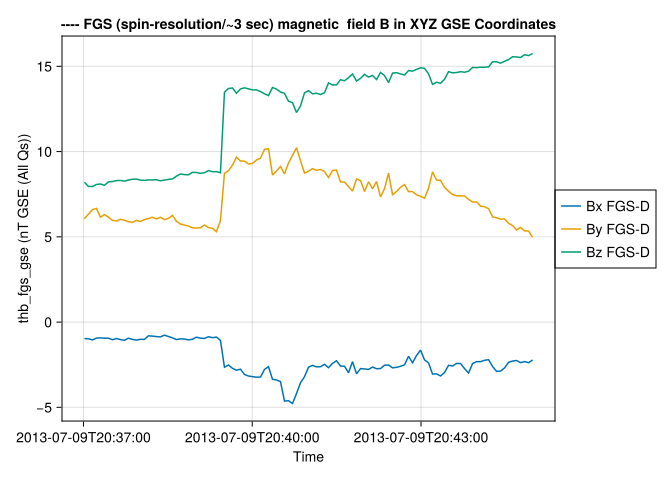
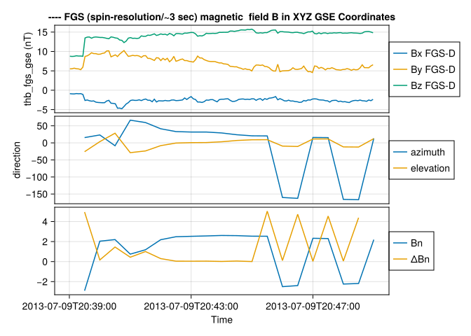
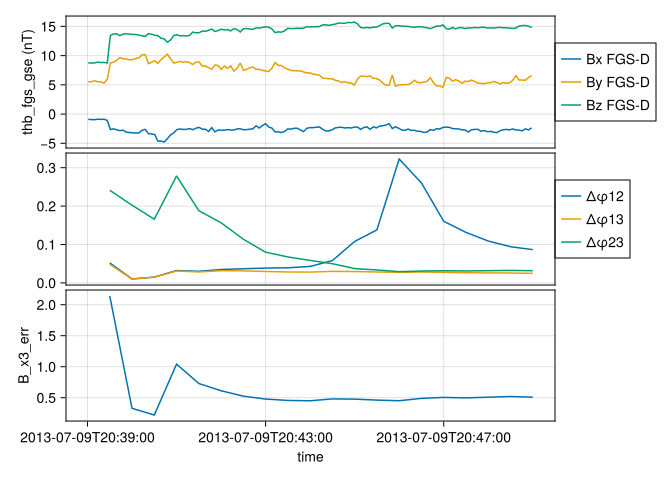

Minimize the variance \(σ^2\) Eq. (8.4) of Ch. 8 by writing out the derivatives with respect to the vector components. Show that the solution is given by Equation (8.7) which is an eigenvalue problem with orthogonal eigenvectors.
This is exactly Equation (8.7): \(\sum_{\nu=1}^3 M_{\mu \nu}^B n_\nu = \lambda n_\mu\). The equation is an eigenvalue problem for the symmetric \(3\times 3\) matrix \(M_{\mu\nu}^B\). The eigenvalues \(\lambda\) are real, and the corresponding eigenvectors \(\hat{\boldsymbol{n}}\) are orthogonal.
2 Electromagnetic ion cyclotron waves
Electromagnetic ion cyclotron waves are left-hand polarized waves excited by velocity space anisotropy (perpendicular gradients in velocity distribution function). They are typically below the ion cyclotron frequency for each species (H+, He+ or O+). MMS observations on 2015 Dec. 14, show that such waves were excited after the passage of a shock.
CondaPkg Found dependencies: /Users/zijin/.julia/packages/DimensionalData/M9vEC/CondaPkg.toml
CondaPkg Found dependencies: /Users/zijin/.julia/dev/Speasy/CondaPkg.toml
CondaPkg Found dependencies: /Users/zijin/.julia/packages/PythonCall/WMWY0/CondaPkg.toml
CondaPkg Dependencies already up to date
2.1 Spectrogram with cyclotron frequencies
[a] Obtain MMS 1 (or 2,3,4) data between 13:27 and 13:29 UT, from the FGM instrument in GSM coordinates, and plot the spectrogram of the X or Y component between 0-2Hz. Overlay the 3 cyclotron frequencies, as shown in Fig. 5 of the paper (for subset of time). [Note: you should create a low-pass filtered version of the average field at 5-10s window to compute the cyclotron frequencies with; for that use tsmooth2 (IDL) or pyspedas.interpol (PySPEDAS) after degap/clip/deflaging the data first].
Can't get MMS1_FGM_SRVY_L2/mms1_fgm_b_gsm_srvy_l2_clean without web service, switching to web service
/Users/zijin/projects/beforerr/.CondaPkg/env/lib/python3.11/site-packages/speasy/core/data_containers.py:18: UserWarning: no explicit representation of timezones available for np.datetime64
return np.searchsorted(time, np.datetime64(key, 'ns'), side='left')
┌ Warning: Time resolution is is not approximately constant (relerr ≈ 0.007986138746711634)
└ @ SpaceTools ~/.julia/dev/SpaceTools/src/timeseries.jl:21
┌ Warning: Time resolution is is not approximately constant (relerr ≈ 0.007986138746711634)
└ @ SpaceTools ~/.julia/dev/SpaceTools/src/timeseries.jl:21
2.2 Band-pass filtered data
[b] Plot the GSM time series of the band-pass filtered data between 0.2 – 2 Hz (again using tsmooth2/pyspedas.interpol to first low-pass filter the data at 0.2Hz, subtract it from the original to create the high-pass residual >0.2Hz, then low-pass filter that with a 2Hz window).
Code
time =DateTime("2015-12-14T13:20:00") ..DateTime("2015-12-14T13:30:00")sda = da[time, 1:3]# Band-pass filter the data between 0.2-2 Hz# First step: Low-pass filter at 0.2 Hzlp_02Hz =smooth(sda, 5u"s") # 0.2 Hz ≈ 5 second window# High-pass by subtracting low-pass from originalhp_02Hz =amap(-, sda, lp_02Hz)# Second step: Low-pass filter at 2 Hz (0.5 second window)bp_filtered =smooth(hp_02Hz, 0.5u"s")tplot([lp_02Hz, hp_02Hz, bp_filtered])
┌ Warning: Time resolution is is not approximately constant (relerr ≈ 0.007984877076234697)
└ @ SpaceTools ~/.julia/dev/SpaceTools/src/timeseries.jl:21
┌ Warning: Time resolution is is not approximately constant (relerr ≈ 0.007984753171800809)
└ @ SpaceTools ~/.julia/dev/SpaceTools/src/timeseries.jl:21

Actually, the frequency response of an \(M\) point moving average filter is not a perfect low-pass filter.
┌ Warning: Time resolution is is not approximately constant (relerr ≈ 0.007984877076234697)
└ @ SpaceTools ~/.julia/dev/SpaceTools/src/timeseries.jl:21

2.3 Minimum Variance Analysis
[c] Use minvar_matrix_make (IDL or pyspedas) applied on the band-pass filtered data to obtain the minimum variance matrix, on a sliding window. You can control the width and shift of the window (see keywords). Rotate the data in i,j,k (max,int,min) coord’s using tvector_rotate (in IDL / Py - SPEDAS; see how to use it from class examples, or from cribs / readthedocs). Plot the data in that coordinate system.
[d] The code minvar_matrix_make allows you to output the eigenvectors and eigenvalues. Plot the eigenvalues and evaluate the confidence in the minvar direction. Plot the angle between the minvar direction and the direction of the ambient magnetic field (the 5-10s average above).
Code
usingLinearAlgebrausingStatisticsusingSpaceToolsusingDates# Load magnetic field data around the shock crossingt0 =DateTime("2008-09-05T15:30:00")t1 =DateTime("2008-09-05T15:40:00")b_data =get_data("cda/THA_L2_FGM/tha_fgs_gse", t0, t1) |> DimArrayB = b_data.data # Get the magnetic field components# Get eigenvalues and eigenvectorsF =mva_mat(B)# The minimum variance direction (shock normal)n̂ = F.vectors[:, 3] # Third eigenvector corresponds to minimum variance# Calculate θBn (angle between B-field and shock normal)B_avg =mean(B, dims=1)[1, :]B_avg_norm = B_avg /norm(B_avg)θBn =acosd(abs(dot(B_avg_norm, n̂)))# Calculate Bn (shock-normal magnetic field component)Bn =dot(B_avg, n̂)println("Results of Minimum Variance Analysis:")println("Shock normal (GSE coordinates): ", round.(n̂, digits=3))println("θBn: ", round(θBn, digits=1), "°")println("Bn: ", Bn)check_mva_mat(F; verbose=true)
[ Info: Cannot parse unit nT*GSE*(All*Qs)
Results of Minimum Variance Analysis:
Shock normal (GSE coordinates): Float32[-0.215, -0.966, 0.143]
θBn: 61.5°
Bn: 26.65665
Float32[0.0060435473 0.97663194 -0.21483368; 0.14459603 -0.21343324 -0.9661977; 0.9894723 0.025224842 0.14250703]
Ratio of intermediate variance to minimum variance = 1.8064607
┌ Warning: Take the MVA result with a grain of salt!
└ @ SpaceTools ~/.julia/dev/SpaceTools/src/cotrans/mva.jl:82
2.5 Hodogram
[e] There are several bursts of EMIC wave power in the interval. Pick one clean burst with 5-10 cycles and plot the B-field hodogram in the plane of polarization (max,int). (Bandpass filtering first will help). Is it left-hand polarized as expected? [Note that the minvar code ensures a right-hand orthogonal system, but you may have to switch vectors around if the angle to B-field is not less than 90deg].
┌ Warning: Time resolution is is not approximately constant (relerr ≈ 0.007949285570537276)
└ @ SpaceTools ~/.julia/dev/SpaceTools/src/timeseries.jl:21

Hodogram analysis indicated left handed polarization during the interval.
3 Shock crossings
Shock crossings were observed by ARTEMIS P1 (TH-B) in the solar wind on 2013-07-09 20:40UT and on 2014-06-09 16:58UT, both captured in Fast Survey and published in Fig. 3 (analysis results in Table 1 of Zhou et al., 202022). Pick one of the two to study.
[a] Determine, using minimum variance analysis, the shock normal, the angle between the B-field and the shock normal, and the shock-normal magnetic field component, Bn.
The shock angle, \(θ_{Bn}\), the angle between the directions of the upstream magnetic field and the shock normal;
Code
# Load magnetic field data around the shock crossingt0 =DateTime("2013-07-09T20:37:00") # Start a few minutes before the crossingt1 =DateTime("2013-07-09T20:45:00") # End a few minutes afterb_data =get_data("cda/THB_L2_FGM/thb_fgs_gse", t0, t1) |> DimArraytplot(b_data; add_title=true)
[ Info: Cannot parse unit nT*GSE*(All*Qs)

Code
# Perform MVA analysis using the built-in functionF =mva_mat(b_data)# The minimum variance direction (shock normal)n̂ = F.vectors[:, 3] # Third eigenvector corresponds to minimum variance# Calculate θBn (angle between B-field and shock normal)B_up =vec(mean(b_data[1:10, :].data; dims=1))θBn =angle(B_up, n̂)# Calculate Bn (shock-normal magnetic field component)Bn =dot(B_up, n̂)println("Results of Minimum Variance Analysis for ARTEMIS P1 shock crossing (2013-07-09):")println("Shock normal (GSE coordinates): ", round.(n̂, digits=3))println("θ_Bn: ", round(θBn, digits=1), "°")println("Bn: ", Bn)check_mva_mat(F, verbose=true)
Results of Minimum Variance Analysis for ARTEMIS P1 shock crossing (2013-07-09):
Shock normal (GSE coordinates): Float32[0.923, 0.347, 0.164]
θ_Bn: 75.4°
Bn: 2.5922403
Float32[-0.27282175 0.2701564 0.9233546; 0.29161265 -0.8913902 0.3469665; 0.91680443 0.36392197 0.16440956]
Ratio of intermediate variance to minimum variance = 10.369079
[ Info: Seems to be a proper MVA attempt!
3.2 Minimum variance direction
[b] Note that there are significant waves downstream but not upstream, which is common for weak (subcritical) shocks. Starting from a small interval barely encompassing the shock (<1min in length), increase the interval by ~0.5 min and recalculate. Then increase again and recalculate. Do so for ~10-20 times until you reach ~10min encompassing the shock. The solution will initially fluctuate from one to the next choice of intervals, then stabilize, then start being jittery again because you are including the waves. Plot the minimum variance direction (two angles, elevation and azimuth, in GSE) and Bn, all as a function of the interval chosen. Pick and report the best solution, based on the shortest time interval choice when the solution becomes stable.
Code
azimuth(x) =rad2deg(atan(x[2], x[1]))elevation(x) =rad2deg(asin(x[3]))# Central time of the shock crossing for ARTEMIS P1 (2013-07-09)t_start =DateTime("2013-07-09T20:39:00")time_shock =DateTime("2013-07-09T20:39:30")n =20t_ends = [time_shock +Second(30* (i -1)) for i in1:n]b_data =get_data("cda/THB_L2_FGM/thb_fgs_gse", t_start, t_ends[end]) |> DimArrayb_data.metadata[:units] ="nT"n̂s =map(t_ends) do t_end b_data_subset = b_data[t_start..t_end, :] F =mva_mat(b_data_subset) F.vectors[:, 3]endBn =dot.(Ref(B_up), n̂s)direction =DimArray( [azimuth.(n̂s) elevation.(n̂s)], (Ti(t_ends), Y([:azimuth, :elevation])); name=:direction)Bns =DimArray(Bn, Ti(t_ends); name=:Bn)ΔBn =abs.(diff(Bns))ΔBn = SpaceTools.rename(ΔBn, :ΔBn)tvars = [b_data, direction, [Bns, ΔBn]]f, axes =tplot(tvars; add_title=true)
[ Info: Cannot parse unit nT*GSE*(All*Qs)

The solution becomes stable around “2013-07-09T20:43:00”, about 4 mins after the shock crossing. after “2013-07-09T20:45:00” the solution becomes jittery because the waves are included.
3.3 Error estimates
[c] The noise in Bn and the minimum variance directions (angular noise) are tabulated in equations 8.24 and 8.23 of Chapter 8. Plot the \(ΔB_n\) and \(Δφ\) separately. Check if they support your choice of interval.
""" Δφij(λᵢ, λⱼ, λ₃, M)Calculate the phase error between components i and j according to:|Δφᵢⱼ| = |Δφⱼᵢ| = √(λ₃/(M-1) * (λᵢ + λⱼ - λ₃)/(λᵢ - λⱼ)²)Parameters:- λᵢ: eigenvalue i- λⱼ: eigenvalue j- λ₃: smallest eigenvalue (λ₃)- M: number of samples"""functionΔφij(λᵢ, λⱼ, λ₃, M)returnsqrt((λ₃ / (M -1)) * (λᵢ + λⱼ - λ₃) / (λᵢ - λⱼ)^2)end"""Calculate the composite statistical error estimate for ⟨B·x₃⟩:|Δ⟨B·x₃⟩| = √(λ₃/(M-1) + (Δφ₃₂⟨B⟩·x₂)² + (Δφ₃₁⟨B⟩·x₁)²)Parameters:- λ₁, λ₂, λ₃: eigenvalues in descending order- M: number of samples- B: mean magnetic field vector- x₁, x₂, x₃: eigenvectors"""functionB_x3_error(λ₁, λ₂, λ₃, M, B, x₁, x₂, x₃) Δφ₃₂ =Δφij(λ₃, λ₂, λ₃, M) Δφ₃₁ =Δφij(λ₃, λ₁, λ₃, M) B_x₂ =dot(B, x₂) B_x₁ =dot(B, x₁)returnsqrt(λ₃ / (M -1) + (Δφ₃₂ * B_x₂)^2+ (Δφ₃₁ * B_x₁)^2)endB_x3_error(F::Eigen, M, B) =B_x3_error(F.values..., M, B, eachcol(F.vectors)...)
Code
res =map(t_ends) do t_end b_data_subset = b_data[t_start..t_end, :] F =mva_mat(b_data_subset) M =size(b_data_subset, 1) B =mean(b_data_subset.data; dims=1) λ₁ = F.values[1] λ₂ = F.values[2] λ₃ = F.values[3] Δφ12= SpaceTools.Δφij(λ₁, λ₂, λ₃, M) Δφ13= SpaceTools.Δφij(λ₁, λ₃, λ₃, M) Δφ23= SpaceTools.Δφij(λ₂, λ₃, λ₃, M) B_x3_err = SpaceTools.B_x3_error(F, M, B) (; time=t_end, Δφ12, Δφ13, Δφ23, B_x3_err)enderrors = SpaceTools.nt2ds(res)tvars = [ b_data, [errors.Δφ12, errors.Δφ13, errors.Δφ23], errors.B_x3_err,]tplot(tvars)

The error estimates support our choice of interval.
Source Code
---title: Problem Set 3number-sections: trueengine: julia---## Minimum and Maximum Variance Analysis> Minimize the variance $σ^2$ Eq. (8.4) of Ch. 8 by writing out the derivatives with respect to the vector components. Show that the solution is given by Equation (8.7) which is an eigenvalue problem with orthogonal eigenvectors.$$\sigma^2=\frac{1}{M} \sum_{m=1}^M\left|\left(\boldsymbol{B}^{(m)}-\langle\boldsymbol{B}\rangle\right) \cdot \hat{\boldsymbol{n}}\right|^2$$ {#eq-Chen84}$$\sum_{\nu=1}^3 M_{\mu \nu}^B n_\nu=\lambda n_\mu$$ {#eq-Chen87}Expand the dot product in components:$$\left(\boldsymbol{B}^{(m)} - \langle \boldsymbol{B} \rangle\right) \cdot \hat{\boldsymbol{n}} = \sum_{\mu=1}^3 \left(B_\mu^{(m)} - \langle B_\mu \rangle\right) n_\mu,$$so that$$\sigma^2 = \frac{1}{M} \sum_{m=1}^M \left(\sum_{\mu=1}^3 \left(B_\mu^{(m)} - \langle B_\mu \rangle\right) n_\mu \right)^2 = \sum_{\mu,\nu=1}^3 n_\mu n_\nu \left[ \frac{1}{M} \sum_{m=1}^M \left(B_\mu^{(m)} - \langle B_\mu \rangle\right) \left(B_\nu^{(m)} - \langle B_\nu \rangle\right) \right]$$Define the magnetic variance matrix$$M_{\mu\nu}^B \equiv \left\langle B_\mu B_\nu \right\rangle - \langle B_\mu \rangle \langle B_\nu \rangle$$so that$$\sigma^2 = \sum_{\mu,\nu=1}^3 n_\mu M_{\mu\nu}^B n_\nu.$$The Lagrangian is given by:$$L(\hat{\boldsymbol{n}}, \lambda) = \sigma^2 - \lambda\left(\sum_{\mu=1}^3 n_\mu^2 - 1\right) = \sum_{\mu,\nu=1}^3 n_\mu M_{\mu\nu}^B n_\nu - \lambda\left(\sum_{\mu=1}^3 n_\mu^2 - 1\right).$$Differentiate with Respect to the Components $n_\alpha$ equal to zero for each component$$\frac{\partial}{\partial n_\alpha} \left(\sum_{\mu,\nu} n_\mu M_{\mu\nu}^B n_\nu\right) - \frac{\partial}{\partial n_\alpha} \left[\lambda\left(\sum_{\mu=1}^3 n_\mu^2 - 1\right)\right] = 2\sum_{\nu=1}^3 M_{\alpha\nu}^B n_\nu - 2\lambda n_\alpha.$$we get:$$2\sum_{\nu=1}^3 M_{\alpha\nu}^B n_\nu - 2\lambda n_\alpha = 0.$$This is exactly Equation (8.7): $\sum_{\nu=1}^3 M_{\mu \nu}^B n_\nu = \lambda n_\mu$. The equation is an eigenvalue problem for the symmetric $3\times 3$ matrix $M_{\mu\nu}^B$. The eigenvalues $\lambda$ are real, and the corresponding eigenvectors $\hat{\boldsymbol{n}}$ are orthogonal.<!-- The minimum variance technique is designed to deal with the situation where some or all of the non-ideal effects mentioned above, except a systematic temporal change in the normal direction, $\hat{\boldsymbol{n}}$, are present. As the estimate of $\hat{\boldsymbol{n}}$, the method identifies that direction in space along which the field-component set $\left\{\boldsymbol{B}^{(m)} \cdot \hat{\boldsymbol{n}}\right\}(m=1,2,3 \ldots M)$ has minimum variance. In other words, $\hat{\boldsymbol{n}}$ is determined by minimisation of$$\sigma^2=\frac{1}{M} \sum_{m=1}^M\left|\left(\boldsymbol{B}^{(m)}-\langle\boldsymbol{B}\rangle\right) \cdot \hat{\boldsymbol{n}}\right|^2$$where the average $\langle\boldsymbol{B}\rangle$ is defined by$$\langle\boldsymbol{B}\rangle \equiv \frac{1}{M} \sum_{m=1}^M \boldsymbol{B}^{(m)}$$and where the minimisation is subject to the normalisation constraint $|\hat{n}|^2=1$. Using a Lagrange multiplier, $\lambda$, to implement this constraint, one then seeks the solution of the set of three homogeneous linear equations$$\begin{aligned}\frac{\partial}{\partial n_X}\left(\sigma^2-\lambda\left(|\hat{\boldsymbol{n}}|^2-1\right)\right) & =0 \\\frac{\partial}{\partial n_Y}\left(\sigma^2-\lambda\left(|\hat{\boldsymbol{n}}|^2-1\right)\right) & =0 \\\frac{\partial}{\partial n_Z}\left(\sigma^2-\lambda\left(|\hat{\boldsymbol{n}}|^2-1\right)\right) & =0\end{aligned}$$where $\sigma^2$ is given by equation 8.4 and $\hat{\boldsymbol{n}}$ is represented in terms of its three components ( $n_X, n_Y, n_Z$ ) along the cartesian coordinate system $X, Y, Z$ (e.g., GSE or GSM) in which the field data $\left\{\boldsymbol{B}^{(m)}\right\}$ are given. When the differentiations in equation 8.6 have been performed, the resulting set of three equations can be written in matrix form as$$\sum_{\nu=1}^3 M_{\mu \nu}^B n_\nu=\lambda n_\mu$$where the subscripts $\mu, v=1,2,3$ denote cartesian components along the $X, Y, Z$ system and$$M_{\mu \nu}^B \equiv\left\langle B_\mu B_\nu\right\rangle-\left\langle B_\mu\right\rangle\left\langle B_v\right\rangle$$is the magnetic variance matrix. It is seen from equation 8.7 that the allowed $\lambda$ values are the eigenvalues $\lambda_1, \lambda_2, \lambda_3$ (given here in order of decreasing magnitude) of $M_{\mu \nu}^B$. Since $M_{\mu \nu}^B$ is symmetric, the eigenvalues are all real and the corresponding eigenvectors, $\boldsymbol{x}_1$, $\boldsymbol{x}_2$, and $\boldsymbol{x}_3$, are orthogonal.-->## Electromagnetic ion cyclotron waves> Electromagnetic ion cyclotron waves are left-hand polarized waves excited by velocity space anisotropy (perpendicular gradients in velocity distribution function). They are typically below the ion cyclotron frequency for each species (H+, He+ or O+). MMS observations on 2015 Dec. 14, show that such waves were excited after the passage of a shock.```{julia}usingSpeasyspz =speasy()usingDatesusingDimensionalDatausingCairoMakieusingSpaceToolsusingUnitfulusingDSP```### Spectrogram with cyclotron frequencies> [a] Obtain MMS 1 (or 2,3,4) data between 13:27 and 13:29 UT, from the FGM instrument in GSM coordinates, and plot the spectrogram of the X or Y component between 0-2Hz. Overlay the 3 cyclotron frequencies, as shown in Fig. 5 of the paper (for subset of time). [Note: you should create a low-pass filtered version of the average field at 5-10s window to compute the cyclotron frequencies with; for that use tsmooth2 (IDL) or pyspedas.interpol (PySPEDAS) after degap/clip/deflaging the data first].https://cdaweb.gsfc.nasa.gov/misc/NotesM.html#MMS1_FGM_SRVY_L2```{julia}t0 ="2015-12-14T13:10:00"t1 ="2015-12-14T13:50:00"tvars ="cda/MMS1_FGM_SRVY_L2/mms1_fgm_b_gsm_srvy_l2_clean"da =get_data(tvars, t0, t1) |> DimArrayda = SpaceTools.modify_meta(da, long_name="B")``````{julia}usingSignalAnalysisusingPlasmaFormularyp = SpaceTools.pspectrum(da[:, 1])begin f =tplot(p; colorrange=(1e-7, 1), alpha=0.7) ax =current_axis()ylims!(ax, 0u"Hz", 2u"Hz") B_ts =smooth(da, 5u"s")[:, 4] ic_H =gyrofrequency.(B_ts, :"H+") .|> ω2f ic_He =gyrofrequency.(B_ts, :"He+") .|> ω2f ic_He2 =gyrofrequency.(B_ts, :"He2+") .|> ω2f ic_O =gyrofrequency.(B_ts, :"O+") .|> ω2ftplot_panel!.(current_axis(), [ic_H, ic_He, ic_He2, ic_O]) fend```### Band-pass filtered data> [b] Plot the GSM time series of the band-pass filtered data between 0.2 – 2 Hz (again using tsmooth2/pyspedas.interpol to first low-pass filter the data at 0.2Hz, subtract it from the original to create the high-pass residual >0.2Hz, then low-pass filter that with a 2Hz window).```{julia}time =DateTime("2015-12-14T13:20:00") ..DateTime("2015-12-14T13:30:00")sda = da[time, 1:3]# Band-pass filter the data between 0.2-2 Hz# First step: Low-pass filter at 0.2 Hzlp_02Hz =smooth(sda, 5u"s") # 0.2 Hz ≈ 5 second window# High-pass by subtracting low-pass from originalhp_02Hz =amap(-, sda, lp_02Hz)# Second step: Low-pass filter at 2 Hz (0.5 second window)bp_filtered =smooth(hp_02Hz, 0.5u"s")tplot([lp_02Hz, hp_02Hz, bp_filtered])```Actually, the frequency response of an $M$ point moving average filter is not a perfect low-pass filter.$$H[f]=\frac{\sin (\pi f M)}{M \sin (\pi f)}$$```{julia}bp_filtered2 =filtfilt(sda, 0.2u"Hz", 2u"Hz").datatplot([hp_02Hz, bp_filtered, bp_filtered2])current_figure()```### Minimum Variance Analysis> [c] Use minvar_matrix_make (IDL or pyspedas) applied on the band-pass filtered data to obtain the minimum variance matrix, on a sliding window. You can control the width and shift of the window (see keywords). Rotate the data in i,j,k (max,int,min) coord’s using tvector_rotate (in IDL / Py - SPEDAS; see how to use it from class examples, or from cribs / readthedocs). Plot the data in that coordinate system.```{julia}time =DateTime("2015-12-14T13:20:00") ..DateTime("2015-12-14T13:30:00")B_ts = bp_filtered[time, 1:3]B_mva_ts =mva(B_ts, B_ts)B_ts_2 = bp_filtered2[time, 1:3]B_mva_ts_2 =mva(B_ts_2, B_ts_2)tplot([B_ts, B_mva_ts, B_ts_2, B_mva_ts_2])```### Minvar direction> [d] The code minvar_matrix_make allows you to output the eigenvectors and eigenvalues. Plot the eigenvalues and evaluate the confidence in the minvar direction. Plot the angle between the minvar direction and the direction of the ambient magnetic field (the 5-10s average above).```{julia}usingLinearAlgebrausingStatisticsusingSpaceToolsusingDates# Load magnetic field data around the shock crossingt0 =DateTime("2008-09-05T15:30:00")t1 =DateTime("2008-09-05T15:40:00")b_data =get_data("cda/THA_L2_FGM/tha_fgs_gse", t0, t1) |> DimArrayB = b_data.data # Get the magnetic field components# Get eigenvalues and eigenvectorsF =mva_mat(B)# The minimum variance direction (shock normal)n̂ = F.vectors[:, 3] # Third eigenvector corresponds to minimum variance# Calculate θBn (angle between B-field and shock normal)B_avg =mean(B, dims=1)[1, :]B_avg_norm = B_avg /norm(B_avg)θBn =acosd(abs(dot(B_avg_norm, n̂)))# Calculate Bn (shock-normal magnetic field component)Bn =dot(B_avg, n̂)println("Results of Minimum Variance Analysis:")println("Shock normal (GSE coordinates): ", round.(n̂, digits=3))println("θBn: ", round(θBn, digits=1), "°")println("Bn: ", Bn)check_mva_mat(F; verbose=true)```### Hodogram> [e] There are several bursts of EMIC wave power in the interval. Pick one clean burst with 5-10 cycles and plot the B-field hodogram in the plane of polarization (max,int). (Bandpass filtering first will help). Is it left-hand polarized as expected? [Note that the minvar code ensures a right-hand orthogonal system, but you may have to switch vectors around if the angle to B-field is not less than 90deg].<!-- Figure 7. Three-axis plot of MMS 1 magnetic field data rotated into local field-aligned coordinates and band-pass filtered from 0.4 to 2.0 Hz, with uniform scale, from 1327:15 to 1328:15 UT on 14 December 2015. -->```{julia}interval =DateTime("2015-12-14T13:40:20") ..DateTime("2015-12-14T13:40:40")let sda = da[interval, 1:3] bp_filtered =filtfilt(sda, 0.8u"Hz", 2u"Hz").data B_mva_ts =mva(bp_filtered, bp_filtered) f =Figure(; size=(1200, 800)) Bx = B_mva_ts[:, [1]] By = B_mva_ts[:, [2]] Bz = B_mva_ts[:, [3]]tplot(f[1, 1], [sda, bp_filtered, B_mva_ts])tplot(f[1, 2], [Bx, By, Bz]; link_yaxes=true) time =dims(Bx, 1).val color = (time .- time[1]) ./ (time[end] - time[1])lines(f[1, 3], Bx[:, 1].data, By[:, 1].data, color=color) fend```Hodogram analysis indicated left handed polarization during the interval.## Shock crossings> Shock crossings were observed by ARTEMIS P1 (TH-B) in the solar wind on 2013-07-09 20:40UT and on 2014-06-09 16:58UT, both captured in Fast Survey and published in Fig. 3 (analysis results in Table 1 of Zhou et al., 202022). Pick one of the two to study.```{julia}usingLinearAlgebrausingStatisticsusingDataFrames, TimeSeries```### Shock normal> [a] Determine, using minimum variance analysis, the shock normal, the angle between the B-field and the shock normal, and the shock-normal magnetic field component, Bn.The shock angle, $θ_{Bn}$, the angle between the directions of the upstream magnetic field and the shock normal;```{julia}# Load magnetic field data around the shock crossingt0 =DateTime("2013-07-09T20:37:00") # Start a few minutes before the crossingt1 =DateTime("2013-07-09T20:45:00") # End a few minutes afterb_data =get_data("cda/THB_L2_FGM/thb_fgs_gse", t0, t1) |> DimArraytplot(b_data; add_title=true)``````{julia}# Perform MVA analysis using the built-in functionF =mva_mat(b_data)# The minimum variance direction (shock normal)n̂ = F.vectors[:, 3] # Third eigenvector corresponds to minimum variance# Calculate θBn (angle between B-field and shock normal)B_up =vec(mean(b_data[1:10, :].data; dims=1))θBn =angle(B_up, n̂)# Calculate Bn (shock-normal magnetic field component)Bn =dot(B_up, n̂)println("Results of Minimum Variance Analysis for ARTEMIS P1 shock crossing (2013-07-09):")println("Shock normal (GSE coordinates): ", round.(n̂, digits=3))println("θ_Bn: ", round(θBn, digits=1), "°")println("Bn: ", Bn)check_mva_mat(F, verbose=true)```### Minimum variance direction> [b] Note that there are significant waves downstream but not upstream, which is common for weak (subcritical) shocks. Starting from a small interval barely encompassing the shock (<1min in length), increase the interval by ~0.5 min and recalculate. Then increase again and recalculate. Do so for ~10-20 times until you reach ~10min encompassing the shock. The solution will initially fluctuate from one to the next choice of intervals, then stabilize, then start being jittery again because you are including the waves. Plot the minimum variance direction (two angles, elevation and azimuth, in GSE) and Bn, all as a function of the interval chosen. Pick and report the best solution, based on the shortest time interval choice when the solution becomes stable.```{julia}azimuth(x) =rad2deg(atan(x[2], x[1]))elevation(x) =rad2deg(asin(x[3]))# Central time of the shock crossing for ARTEMIS P1 (2013-07-09)t_start =DateTime("2013-07-09T20:39:00")time_shock =DateTime("2013-07-09T20:39:30")n =20t_ends = [time_shock +Second(30* (i -1)) for i in1:n]b_data =get_data("cda/THB_L2_FGM/thb_fgs_gse", t_start, t_ends[end]) |> DimArrayb_data.metadata[:units] ="nT"n̂s =map(t_ends) do t_end b_data_subset = b_data[t_start..t_end, :] F =mva_mat(b_data_subset) F.vectors[:, 3]endBn =dot.(Ref(B_up), n̂s)direction =DimArray( [azimuth.(n̂s) elevation.(n̂s)], (Ti(t_ends), Y([:azimuth, :elevation])); name=:direction)Bns =DimArray(Bn, Ti(t_ends); name=:Bn)ΔBn =abs.(diff(Bns))ΔBn = SpaceTools.rename(ΔBn, :ΔBn)tvars = [b_data, direction, [Bns, ΔBn]]f, axes =tplot(tvars; add_title=true)```The solution becomes stable around "2013-07-09T20:43:00", about 4 mins after the shock crossing. after "2013-07-09T20:45:00" the solution becomes jittery because the waves are included.### Error estimates> [c] The noise in Bn and the minimum variance directions (angular noise) are tabulated in equations 8.24 and 8.23 of Chapter 8. Plot the $ΔB_n$ and $Δφ$ separately. Check if they support your choice of interval.The angular error estimates (in radians) is $$\begin{aligned}\left|\Delta \varphi_{i j}\right|=\left|\Delta \varphi_{j i}\right| & =\left\langle\left\langle\left(\Delta x_{i j}\right)^2\right\rangle\right\rangle^{1 / 2}=\left\langle\left\langle\left(\Delta x_{j i}\right)^2\right\rangle\right\rangle^{1 / 2} \\& =\sqrt{\frac{\lambda_3}{(M-1)} \frac{\left(\lambda_i+\lambda_j-\lambda_3\right)}{\left(\lambda_i-\lambda_j\right)^2}}, \quad i \neq j\end{aligned}$$The composite statistical error estimate for $\left\langle\mathbf{B} \cdot \mathbf{x}_3\right\rangle$ is$$\left|\Delta\left\langle\mathbf{B} \cdot \mathbf{x₃}\right\rangle\right|=\sqrt{\frac{\lambda_3}{M-1}+\left(\Delta \varphi_{32}\langle\mathbf{B}\rangle \cdot \mathbf{x}_2\right)^2+\left(\Delta \varphi_{31}\langle\mathbf{B}\rangle \cdot \mathbf{x}_1\right)^2}$$```julia""" Δφij(λᵢ, λⱼ, λ₃, M)Calculate the phase error between components i and j according to:|Δφᵢⱼ| = |Δφⱼᵢ| = √(λ₃/(M-1) * (λᵢ + λⱼ - λ₃)/(λᵢ - λⱼ)²)Parameters:- λᵢ: eigenvalue i- λⱼ: eigenvalue j- λ₃: smallest eigenvalue (λ₃)- M: number of samples"""functionΔφij(λᵢ, λⱼ, λ₃, M)returnsqrt((λ₃ / (M -1)) * (λᵢ + λⱼ - λ₃) / (λᵢ - λⱼ)^2)end"""Calculate the composite statistical error estimate for ⟨B·x₃⟩:|Δ⟨B·x₃⟩| = √(λ₃/(M-1) + (Δφ₃₂⟨B⟩·x₂)² + (Δφ₃₁⟨B⟩·x₁)²)Parameters:- λ₁, λ₂, λ₃: eigenvalues in descending order- M: number of samples- B: mean magnetic field vector- x₁, x₂, x₃: eigenvectors"""functionB_x3_error(λ₁, λ₂, λ₃, M, B, x₁, x₂, x₃) Δφ₃₂ =Δφij(λ₃, λ₂, λ₃, M) Δφ₃₁ =Δφij(λ₃, λ₁, λ₃, M) B_x₂ =dot(B, x₂) B_x₁ =dot(B, x₁)returnsqrt(λ₃ / (M -1) + (Δφ₃₂ * B_x₂)^2+ (Δφ₃₁ * B_x₁)^2)endB_x3_error(F::Eigen, M, B) =B_x3_error(F.values..., M, B, eachcol(F.vectors)...)``````{julia}res =map(t_ends) do t_end b_data_subset = b_data[t_start..t_end, :] F =mva_mat(b_data_subset) M =size(b_data_subset, 1) B =mean(b_data_subset.data; dims=1) λ₁ = F.values[1] λ₂ = F.values[2] λ₃ = F.values[3] Δφ12= SpaceTools.Δφij(λ₁, λ₂, λ₃, M) Δφ13= SpaceTools.Δφij(λ₁, λ₃, λ₃, M) Δφ23= SpaceTools.Δφij(λ₂, λ₃, λ₃, M) B_x3_err = SpaceTools.B_x3_error(F, M, B) (; time=t_end, Δφ12, Δφ13, Δφ23, B_x3_err)enderrors = SpaceTools.nt2ds(res)tvars = [ b_data, [errors.Δφ12, errors.Δφ13, errors.Δφ23], errors.B_x3_err,]tplot(tvars)```The error estimates support our choice of interval.